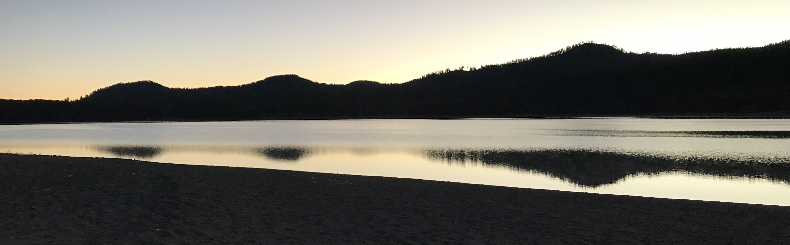

About Me
I’m Chris, an MIT PhD student applying computational tools to biological questions and volunteering as a software developer and core maintainer at Oppia.
When I backpack through the wilderness, I like to rise early and watch the sun rise. As the land around me emerges from the shadows, I admire the intricate beauty of the natural world. I want to understand how natural processes work–from the biochemical reactions in living cells to the population dynamics that emerge from interacting individuals. My mission is to harness computational tools to improve our collective understanding of these processes.
I pursued this goal in the Fernald Lab at Stanford, where I used cichlid fish to investigate how androgens like testosterone influence social behaviors. I designed and conducted experiments to measure differences in social behaviors between normal fish and those with androgen receptors that had been disabled by CRISPR-Cas9 gene editing. Further, I developed software to help process the resulting data. My work revealed previously unknown functions of androgen receptors in these fish. These findings were published in the Proceedings of the National Academy of Sciences, and I presented them at the annual meeting of the Society for Neuroscience.
I also believe in the potential of open-source software to do social good. I am a core maintainer of Oppia, an open-source, online learning platform that aims to make high-quality education available to the students with the least access to it. Oppia serves over one million of these students worldwide. I lead the Automated QA team, where I am responsible for Oppia’s automated tests and testing infrastructure. I develop plans and milestones for the team, and I mentor my team members to grow their capabilities. Some of Oppia’s tests used to pass only 24% of the time, but my team has increased that rate to at least 65% across all tests. Under my guidance, team members have also grown in ability so that one who joined the team with little testing experience is now co-leading the team alongside me.
In addition, I develop open-source software for my scientific research. In the Covert Lab at Stanford, I co-developed Vivarium, a tool which supports the modular integration of systems biology models. I used Vivarium to build a simulation of hundreds of E. coli where each cell’s behavior is determined by genetics and molecular mechanisms. This work demonstrated Vivarium’s potential to my lab and, combined with my advocacy, convinced the lab to adopt Vivarium.
I am excited to continue developing and applying computational tools like Vivarium to biological questions. I look forward to seeing what new discoveries they enable–and what new questions those discoveries raise.

Sunrise in Lassen Volcanic National Park, Summer 2018. Copyright © Christopher Skalnik, All Rights Reserved.
The profile image at the top is under Copyright ©, All Rights Reserved.